Lesson 25 · Part 2 · Your workbench · 5 questions
Measure your own loop
Read first: Review before git, Evals: better or just different?
How much faster the agent feels is not a measurement. Log four numbers for every ticket: time to merge, agent cost, review rounds and rework. Take a baseline from your last five tickets before you change anything, and you'll know which changes to your setup actually help.
The idea
You buy new running shoes and the first run feels quick. Your watch says your 5K time hasn't moved. The watch remembers last month; your legs don't. Nobody trusts a feeling about a race time, yet most of us judge our agent setup exactly that way.
Evals: better or just different? tests a setup on fixed tasks. This lesson measures the other side: what happens to your real tickets, week after week. It needs no dashboard, just a log:
- Pick a few numbers per ticket, some for speed and some for quality, and never read one without the other.
- Let your scripts write them down as you work, one line per event, into one file.
- Take a baseline first: your last five tickets, from the tracker and GitHub, before you change anything.
- Change one thing at a time, keep logging, and read the rows, not just the averages.
- Confirm on your eval set before you believe a change made you faster.

Up close
Four numbers are enough to start:
| Number | Where it comes from | What it catches |
|---|---|---|
| Hours to merge | Your scripts' timestamps | A slow loop |
| Agent cost | claude -p JSON, or /usage | Runaway sessions |
| Review rounds | GitHub: "changes requested" | PRs opened too early |
| Rework | You: a later fix or revert | Speed bought with bugs |
Speed and quality come in pairs. DORA, the research programme behind the book Accelerate (Forsgren, Humble and Kim, 2018), groups its delivery metrics into throughput (how fast changes ship) and instability (how often they fail or need rework). In 2024 it added a fifth metric, deployment rework rate, for unplanned deploys made to fix a production problem. Its 2025 report shows why they belong together: more AI adoption went with higher throughput, and with lower stability. Watch only speed and that looks like a win. So keep the same pairing for yourself: no hours column without the rework column next to it.
Avoid vanity metrics. Lines of code, PRs opened, sessions run, tokens used, "percent of code written by AI". Ask of any number: would it go up if my work got worse? If yes, it measures activity, not results.
Cost is an estimate. Claude Code computes it from token counts at list price. On a subscription you aren't billed per token, but the number still shows which tickets eat the most.
The log and the eval answer different questions. The log is real work, so every ticket differs: a month of config changes looks fast whatever your setup. The eval holds the tasks fixed. Use the log to notice, and the eval to confirm.
At your laptop
One tiny script that only appends. Save it as tlog on your PATH:
#!/bin/bash
# tlog PAY-123 cost 1.80
# one line per event; only appends
printf '%s\t%s\t%s\t%s\n' \
"$(date +%s)" "$1" "$2" "${3:-}" \
>> "$HOME/tasks/loop.tsv"Call it from the scripts you already have (One folder per task, Running agents without you):
# newtask: which setup ran this?
# (if your setup lives in git)
v=$(git -C ~/setup \
rev-parse --short HEAD)
tlog "$id" start "$v"
# after each claude -p run
tlog "$id" cost \
"$(jq .total_cost_usd run.json)"
# donetask, before removing each
# worktree: rounds of "changes"
n=$(cd "$wt" && gh pr view \
--json reviews --jq '[.reviews[]
| select(.state ==
"CHANGES_REQUESTED")] | length')
tlog "$1" rounds "$n"
# ...and once, at the end
tlog "$1" mergedTwo numbers need you: tlog PAY-123 cost 2.40 from /usage before you close an interactive session, and tlog PAY-123 rework PAY-140 the day a fix lands. Then one row per ticket:
#!/bin/bash
# loopstats: one row per ticket
awk -F'\t' '
$3=="start" {s[$2]=$1}
$3=="merged" {m[$2]=$1}
$3=="rounds" {r[$2]+=$4}
$3=="cost" {c[$2]+=$4}
$3=="rework" {w[$2]++}
END {
print "ticket hours rounds rework $"
for (t in m) printf \
"%s %.0f %d %d %.2f\n", t,
(m[t]-s[t])/3600, r[t], w[t], c[t]
}' "$HOME/tasks/loop.tsv" | column -tFor the baseline, GitHub already knows your last five merges and their review rounds; the start dates are in your tracker:
gh pr list --author "@me" \
--state merged --limit 5 \
--json number,mergedAt,reviews \
--jq '.[] | [.number, .mergedAt,
([.reviews[] | select(.state ==
"CHANGES_REQUESTED")] | length)]
| @tsv'Agent cost can't be recovered for old tickets, which is one more reason to start the log before you change your setup.
Your turn
Question 1 · ~2 min
Since you started working with agents, your lines of code per day have tripled. Your manager wants that number on the team dashboard. Good idea?
Show answer
No: it's a vanity metric. It would go up if your work got worse. An agent that hand-writes retries and rate limits instead of using the team's client library adds hundreds of lines, and several PRs later someone deletes them. Lines are cost, not value. Show hours to merge with rework next to it.
Question 2 · ~2 min
After you add a fresh reviewer before git, your review rounds fall from about two per PR to one. But two of your last five tickets needed a fix PR within a week; before, none did. Is the reviewer helping?
Show answer
The friction number improved and the quality number got worse. Polished PRs get approved faster, so human reviewers may be reading less closely. Rounds measure how often a PR comes back, not whether it is right. Read the two fixes: what kind of bug, and which check would have caught it? Add that to REVIEW.md or a test, and keep watching rework, not rounds alone.
Question 3 · ~2 min
On Monday you switch to a new setup and start logging. Two weeks later: 30 hours per ticket, 1.2 review rounds, $6 of agent cost. You tell the team it works. What's missing?
Show answer
A baseline. Thirty hours means nothing without the number from before. Your last five tickets' dates and review rounds are in the tracker and GitHub, so you can still get those, but their agent cost is gone. Next time, log a week with the old setup first, then change one thing.
Question 4 · ~2 min
You switch your default model to a smaller one. Agent cost per ticket falls from $8 to $2. Hours per ticket go up by a day, because you rewrote half of what the agent produced. A win?
Show answer
No. An hour of an engineer's time costs far more than the $6 saved. Cost is one column; read it with hours and rework. A smaller model is right for small, well-defined steps (see Script first, one small agent step), not because the cost column shrank.
Question 5 · ~3 min
Stretch: your log shows tickets 40% faster in March than in February. March is also when you added your verify script. A colleague points out that March was mostly small config tickets. How do you find out if the script helped?
Hint
Show answer
Run your eval set with and without the change. The log can't separate your setup from the mix of tickets: easy tickets make any setup look fast. An eval runs both setups on the same tasks, several times each, so the ticket mix drops out. If the eval agrees, believe the log; if not, the speed came from the tickets.
Interesting fact: Felt faster, measured slower
In early 2025, METR, a non-profit research group, ran a randomised trial with 16 experienced open-source developers on 246 real issues in large projects they had worked on for years (on average over 22,000 GitHub stars and a million lines of code). Each issue was randomly assigned: AI tools allowed or not. Most developers used Cursor with Claude 3.5 or 3.7 Sonnet. Before starting, the developers forecast that AI would cut their time by 24%; experts in economics and machine learning predicted 39% and 38%. With AI allowed, tasks took 19% longer. After the study, the developers still estimated that AI had made them 20% faster. METR warned against reading too much into it: a small sample, one setting, early-2025 tools. In February 2026 it said a follow-up study could no longer give a reliable number, partly because many developers now refused to work without AI, and that developers were probably sped up more by then. The tools have changed. The gap they found was between a feeling and a stopwatch: nearly 40 points, on the developers' own work.
Facts checked: November 2026 (METR, July 2025 paper and February 2026 update; DORA metrics guide and history; Google Cloud, 2025 DORA report announcement; Claude Code docs: costs, CLI reference; GitHub CLI manual).
Answers
- Question 1
No: it's a vanity metric. It would go up if your work got worse. An agent that hand-writes retries and rate limits instead of using the team's client library adds hundreds of lines, and several PRs later someone deletes them. Lines are cost, not value. Show hours to merge with rework next to it.
- Question 2
The friction number improved and the quality number got worse. Polished PRs get approved faster, so human reviewers may be reading less closely. Rounds measure how often a PR comes back, not whether it is right. Read the two fixes: what kind of bug, and which check would have caught it? Add that to
REVIEW.mdor a test, and keep watching rework, not rounds alone. - Question 3
A baseline. Thirty hours means nothing without the number from before. Your last five tickets' dates and review rounds are in the tracker and GitHub, so you can still get those, but their agent cost is gone. Next time, log a week with the old setup first, then change one thing.
- Question 4
No. An hour of an engineer's time costs far more than the $6 saved. Cost is one column; read it with hours and rework. A smaller model is right for small, well-defined steps (see Script first, one small agent step), not because the cost column shrank.
- Question 5
Run your eval set with and without the change. The log can't separate your setup from the mix of tickets: easy tickets make any setup look fast. An eval runs both setups on the same tasks, several times each, so the ticket mix drops out. If the eval agrees, believe the log; if not, the speed came from the tickets.